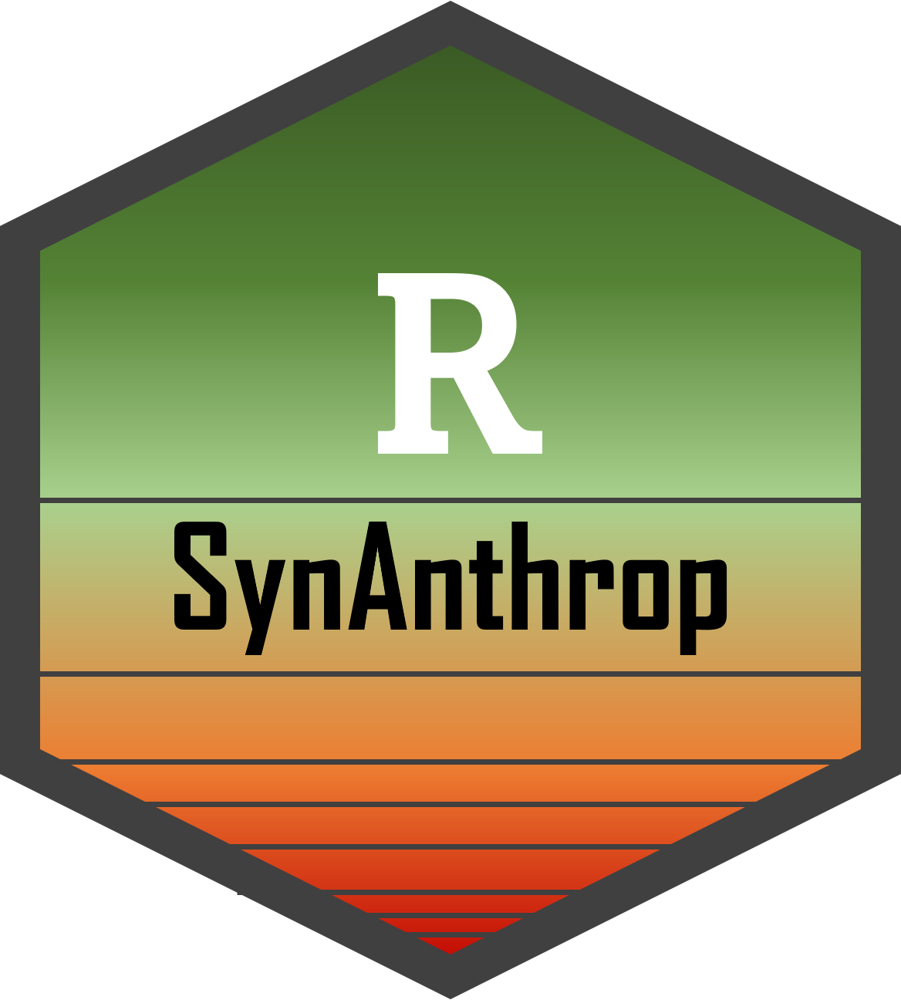

SynAnthrop is a R package developed to assess the sensitivity of species and communities to anthropogenization based on occurrence data, via the calculation of the Species Synanthropy Index (SSI).
Synanthrop allows to describe the ecological affinities of species and groups in a simple, reproducible, multi-scale and less subjective way than with expert assessments. The SSI scores can then be used to identify species, communities, and related habitats that require significant conservation and restoration effort. They are complementary to other existing priorization indices such as red lists, rarity or specialization degrees.
The analysis is based on the comparison of the observed distribution of species along a gradient of anthropogenization within a territory, and a distribution that would be expected if anthropisation had no effect on this species distribution (null distribution). Null distributions are generated per species based on their range and survey intensity per site.
Install the package, its dependencies and documentation by typing the following line of code in the R console:
remotes::install_github("lomorel/SynAnthrop", dependencies = TRUE)Access the SSI tutorial and analyses by :
- consulting the SynAnthrop GitHub repository
- downloading the PDF files available in the vignettes subfolder
- executing the R vignettes in the vignettes subfolder
Package and tutorial written by Loïs Morel, Lab. DECOD, Institut Agro, Rennes, France.
Citations:
- Morel L. 2023. SynAnthrop: Species distribution and sensitivity to anthropisation, R package version 0.1.1, https://github.com/lomorel/SynAnthrop